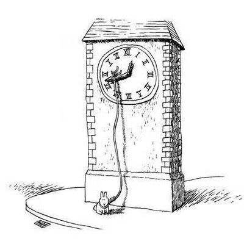

淡水
@dnshu135734
@tsuki_404ovo @w0sh1Asak1 @youmu0187 只是尝试一下啦。环境很好但是开始的心境？没什么情绪。我担心是量不够多或者我平常吃的别的药导致我没欣快感呢

宇佐见弥生
@tsuki_404ovo
@dnshu135734 @w0sh1Asak1 @youmu0187 足够了，别再加量了，od体验和开始时的心境以及过程中的环境也有关，每个人体质也不一样，不要盲目加量啊（……最好是不要od，不过说这些没有用的